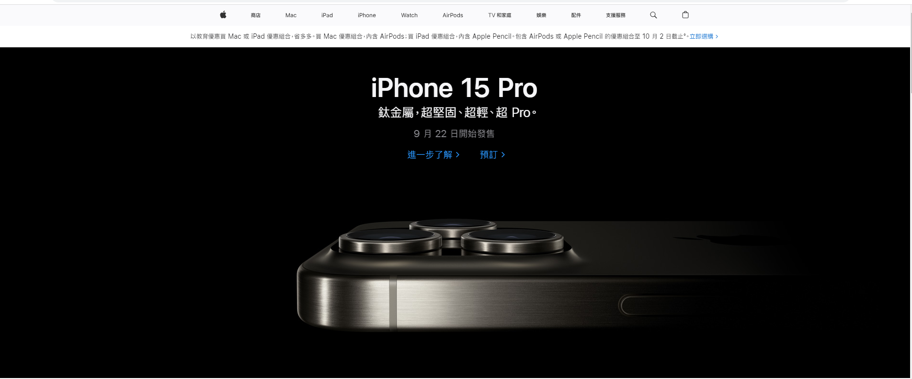

hello world :))
残響散歌
Aimer Da-ta-ra, ta-ra-tat ta
Da-ra-tat ta, da-ra-tat ta
Da-ta-ra, ta-ra-tat ta
Da-ra-tat ta, da-ra-tat ta-ra
誰が袖に咲く幻花 ただそこに藍を落とした
派手に色を溶かす夜に 銀朱の月を添えて
転がるように風を切って 躓くごとに強くなった
光も痛みも怒りも全部 抱きしめて
選ばれなければ 選べばいい
声よ 轟け 夜のその向こうへ 涙で滲んでた
あんなに遠くの景色まで響き渡れ
何を奏でて? 誰に届けたくて? 不確かなままでいい
どんなに暗い感情も どんなに長い葛藤も
歌と散れ 残響
Da-ta-ra, ta-ra-tat ta
Da-ra-tat ta, da-ra-tat ta
Da-ta-ra, ta-ra-tat ta
Da-ra-tat ta, da-ra-tat ta-ra
ただ一人舞う千夜 違えない帯(たい)を結べば
派手な色も負かす様に 深紅の香(か)こそあはれ
この先どんなつらい時も 口先よりも胸を張って
抱いた夢の灯りを全部 辿るだけ
逃げ出すため ここまで来たんじゃないだろ?
選ばれなければ 選べばいい
声をからして 燃える花のように 闇間を照らしたら
曖昧過ぎる正解も譜面にして
夜を数えて朝を描く様な 鮮やかな音を鳴らす
どんなに深い後悔も どんなに高い限界も
掻き消して 残響
Da-ta-ra, ta-ra-tat ta
Da-ra-tat ta, da-ra-tat ta
Da-ta-ra, ta-ra-tat ta
Da-ra-tat ta, da-ra-tat ta-ra
